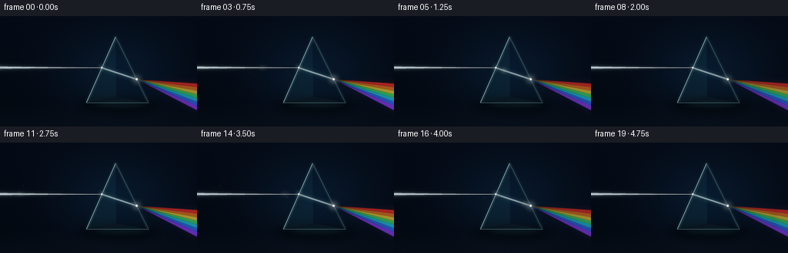
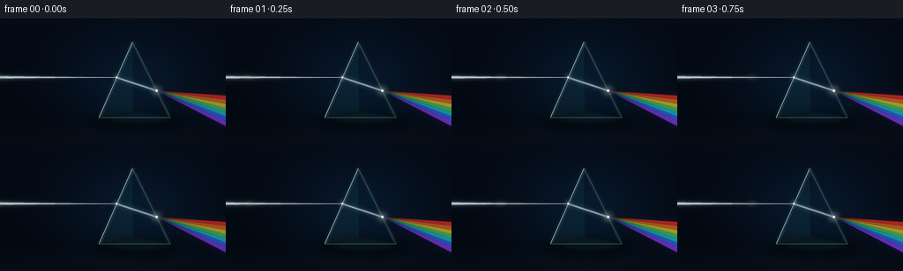

CODING AGENTS AS PIXEL WORLD MODELS
traex/GPT-5.6-Sol · phygen_086
点击播放 · 原生 RGB 像素
逐轮保存的候选
回放视频、检查图与代码变化。
每份候选均可单独播放。实际图片检查记录在下方工具轨迹中。
候选 01播放与检查图
点击播放 · 原生 RGB 像素


展开代码变化
--- 上一保存版本
+++ 本次保存版本
@@ -0,0 +1,217 @@
+from pathlib import Path
+import math
+import numpy as np
+from PIL import Image, ImageDraw, ImageFilter
+import artifact_io
+
+# A hand-rendered, physically legible prism demonstration.
+W, H, N, FPS = 256, 144, 20, 4.0
+S = 4
+SW, SH = W*S, H*S
+CASE_DIR = Path(__file__).resolve().parent
+
+
+def sc_point(p):
+ return (int(round(p[0]*S)), int(round(p[1]*S)))
+
+
+def sc_poly(points):
+ return [sc_point(p) for p in points]
+
+
+def overlay(base, layer):
+ return Image.alpha_composite(base, layer)
+
+
+def polygon_layer(points, color, blur=0):
+ layer = Image.new('RGBA', (SW, SH), (0, 0, 0, 0))
+ ImageDraw.Draw(layer).polygon(sc_poly(points), fill=color)
+ if blur:
+ layer = layer.filter(ImageFilter.GaussianBlur(blur*S))
+ return layer
+
+
+def line_layer(points, fill, width, blur=0, joint='curve'):
+ layer = Image.new('RGBA', (SW, SH), (0, 0, 0, 0))
+ ImageDraw.Draw(layer).line(sc_poly(points), fill=fill, width=max(1, int(width*S)), joint=joint)
+ if blur:
+ layer = layer.filter(ImageFilter.GaussianBlur(blur*S))
+ return layer
+
+
+def ellipse_layer(box, fill, blur=0):
+ layer = Image.new('RGBA', (SW, SH), (0, 0, 0, 0))
+ ImageDraw.Draw(layer).ellipse(tuple(int(v*S) for v in box), fill=fill)
+ if blur:
+ layer = layer.filter(ImageFilter.GaussianBlur(blur*S))
+ return layer
+
+
+def make_background(frame_idx):
+ yy, xx = np.mgrid[0:SH, 0:SW]
+ x = xx / S
+ y = yy / S
+ # Near-black blue laboratory atmosphere with a restrained pool of teal behind the prism.
+ radial = np.exp(-(((x-151)/103)**2 + ((y-72)/69)**2)*1.7)
+ topfall = np.clip(1-y/H, 0, 1)
+ r = 3 + 4*radial + 1.5*topfall
+ g = 8 + 14*radial + 3*topfall
+ b = 16 + 23*radial + 6*topfall
+ # Surface begins at the prism's base, kept dark so the spectral beam remains dominant.
+ floor = np.clip((y-113)/31, 0, 1)
+ r += 4*floor
+ g += 5*floor
+ b += 6*floor
+ # Fine, deterministic photographic grain (slightly changing, never distracting).
+ rng = np.random.default_rng(8100 + frame_idx)
+ grain = rng.normal(0, 0.65, (SH, SW))
+ arr = np.stack([r+grain, g+grain, b+grain], axis=-1)
+ return Image.fromarray(np.uint8(np.clip(arr, 0, 255)), 'RGB').convert('RGBA')
+
+
+# Optical geometry: horizontal incident ray, downward-bending internal ray,
+# and red-to-violet increasing deviation on exit.
+APEX = (150.0, 27.0)
+LEFT = (112.0, 113.0)
+RIGHT = (193.0, 113.0)
+ENTRY = (132.2, 67.2)
+EXIT = (177.6, 82.3)
+
+# Spectrum boundaries at the right edge. Red is least deviated (uppermost), violet most.
+spectral = [
+ ((255, 48, 35), (88.0, 93.5)),
+ ((255, 126, 28), (93.0, 98.5)),
+ ((255, 221, 52), (98.0, 103.5)),
+ ((67, 235, 105), (103.0, 108.5)),
+ ((31, 213, 237), (108.0, 113.5)),
+ ((52, 113, 255), (113.0, 119.0)),
+ ((151, 61, 255), (118.5, 125.0)),
+]
+
+
+def render_frame(i):
+ t = i / FPS
+ base = make_background(i)
+
+ # A dim horizon and the prism's contact shadow anchor the scene.
+ base = overlay(base, line_layer([(0, 113.5), (256, 113.5)], (73, 103, 116, 34), .45, .5))
+ base = overlay(base, ellipse_layer((100, 107, 207, 127), (0, 0, 0, 125), 6))
+ base = overlay(base, ellipse_layer((120, 110, 194, 120), (68, 167, 181, 24), 3))
+
+ # Very faint atmospheric dust caught in the white and colored light.
+ dust = Image.new('RGBA', (SW, SH), (0, 0, 0, 0))
+ dd = ImageDraw.Draw(dust)
+ rng = np.random.default_rng(31415)
+ for k in range(40):
+ x0 = float(rng.uniform(5, 252))
+ y0 = float(rng.uniform(47, 128))
+ drift = math.sin(t*.42 + k*1.91) * .55
+ x = x0 + drift
+ y = y0 + math.cos(t*.31 + k)*.28
+ # Brighten mostly around optical paths; elsewhere particles remain almost invisible.
+ near_in = (x < ENTRY[0]+3 and abs(y-67) < 11)
+ slope_top = EXIT[1] + (x-EXIT[0])*(90-EXIT[1])/(256-EXIT[0])
+ slope_bot = EXIT[1] + (x-EXIT[0])*(124-EXIT[1])/(256-EXIT[0])
+ near_out = x > EXIT[0] and slope_top-4 < y < slope_bot+4
+ if near_in or near_out:
+ rad = (0.22 + (k % 3)*.10)*S
+ alpha = 35 + (k*17 % 35)
+ dd.ellipse((x*S-rad, y*S-rad, x*S+rad, y*S+rad), fill=(190,225,238,alpha))
+ base = overlay(base, dust.filter(ImageFilter.GaussianBlur(.12*S)))
+
+ # Broad spectral aura first, behind the crisp ribbons.
+ fan_outer = [EXIT, (262, 85), (262, 130)]
+ base = overlay(base, polygon_layer(fan_outer, (86, 91, 255, 23), 8))
+ base = overlay(base, polygon_layer([EXIT, (262, 85), (262, 100)], (255, 72, 28, 19), 7))
+ base = overlay(base, polygon_layer([EXIT, (262, 107), (262, 130)], (78, 50, 255, 23), 7))
+
+ # Colored output ribbons, each with broad soft glow and a clean luminous center.
+ shimmer = 0.94 + .06*math.sin(2*math.pi*(t/2.5))
+ for j, (rgb, (ya, yb)) in enumerate(spectral):
+ p = [EXIT, (260, ya), (260, yb)]
+ base = overlay(base, polygon_layer(p, (*rgb, int(46*shimmer)), 3.8))
+ for j, (rgb, (ya, yb)) in enumerate(spectral):
+ p = [EXIT, (260, ya), (260, yb)]
+ base = overlay(base, polygon_layer(p, (*rgb, int(164*shimmer)), .35))
+ # Thin bright filament at each band center gives a laser-like optical clarity.
+ yc = (ya+yb)/2
+ base = overlay(base, line_layer([EXIT, (260, yc)], (*rgb, 105), .48, .25))
+
+ # A low, subtle rainbow reflection on the black tabletop.
+ reflection_colors = [(255,55,35), (255,170,35), (58,220,121), (42,150,255), (139,61,255)]
+ for j, rgb in enumerate(reflection_colors):
+ base = overlay(base, polygon_layer([(181,110), (260,123+j*3.2), (260,126+j*3.2)], (*rgb, 12), 4))
+
+ # Incident beam glows and core. Its tiny taper makes the direction unmistakable.
+ incident_poly = [(-8, 63.4), ENTRY, (-8, 70.7)]
+ base = overlay(base, polygon_layer(incident_poly, (122, 211, 255, 45), 6.0))
+ base = overlay(base, polygon_layer(incident_poly, (204, 239, 255, 72), 2.0))
+ base = overlay(base, polygon_layer([(-8,65.15), ENTRY, (-8,68.75)], (227,248,255,188), .42))
+ base = overlay(base, line_layer([(-5,66.9), ENTRY], (255,255,255,238), 1.12, .18))
+
+ # The transparent glass volume and separate facets.
+ glass = Image.new('RGBA', (SW, SH), (0,0,0,0))
+ gd = ImageDraw.Draw(glass)
+ gd.polygon(sc_poly([APEX, LEFT, RIGHT]), fill=(21, 95, 116, 52))
+ gd.polygon(sc_poly([APEX, LEFT, (151,105)]), fill=(62, 173, 194, 20))
+ gd.polygon(sc_poly([APEX, (151,105), RIGHT]), fill=(9, 37, 64, 30))
+ gd.polygon(sc_poly([(151,105), LEFT, RIGHT]), fill=(110, 213, 218, 12))
+ base = overlay(base, glass)
+
+ # Internal refracted ray is explicitly bent down toward the base normal.
+ base = overlay(base, line_layer([ENTRY, EXIT], (116, 220, 255, 62), 7.0, 3.0))
+ base = overlay(base, line_layer([ENTRY, EXIT], (218, 249, 255, 175), 2.7, .65))
+ base = overlay(base, line_layer([ENTRY, EXIT], (255, 255, 255, 243), .85, .18))
+
+ # Travelling pulse emphasizes passage without making the beam flicker on/off.
+ phase = (t/2.5) % 1.0
+ if phase < .46:
+ u = phase/.46
+ px = -3 + (ENTRY[0]+3)*u
+ py = 66.9 + .25*math.sin(u*math.pi)
+ base = overlay(base, ellipse_layer((px-8, py-2.4, px+8, py+2.4), (235,252,255,80), 3))
+ elif phase < .63:
+ u = (phase-.46)/.17
+ px = ENTRY[0] + (EXIT[0]-ENTRY[0])*u
+ py = ENTRY[1] + (EXIT[1]-ENTRY[1])*u
+ base = overlay(base, ellipse_layer((px-5, py-4, px+5, py+4), (239,254,255,85), 3))
+ else:
+ u = (phase-.63)/.37
+ px = EXIT[0] + (260-EXIT[0])*u
+ # White packet resolves into a soft full-spectrum transverse highlight.
+ for j, (rgb, (ya,yb)) in enumerate(spectral):
+ yc = (ya+yb)/2
+ py = EXIT[1] + (yc-EXIT[1])*u
+ base = overlay(base, ellipse_layer((px-3.5, py-1.2, px+3.5, py+1.2), (*rgb, 43), 1.4))
+
+ # Glass edge work, brighter on the illuminated faces.
+ base = overlay(base, line_layer([LEFT, APEX, RIGHT], (153, 235, 242, 72), 3.0, 2.0))
+ base = overlay(base, line_layer([APEX, LEFT], (205, 251, 255, 185), 1.05, .2))
+ base = overlay(base, line_layer([APEX, RIGHT], (158, 227, 238, 150), .9, .2))
+ base = overlay(base, line_layer([LEFT, RIGHT], (180, 238, 241, 115), .9, .2))
+ # Parallel inner rim suggests a thick, real glass object.
+ base = overlay(base, line_layer([(149.9,31.5), (115.0,111.0)], (138, 229, 239, 58), .55, .1))
+ base = overlay(base, line_layer([(154.0,33.2), (189.8,110.1)], (123, 211, 229, 43), .5, .1))
+
+ # Bright refraction points and apex sparkle.
+ pulse = .88 + .12*math.sin(t*2.2)
+ base = overlay(base, ellipse_layer((ENTRY[0]-5, ENTRY[1]-5, ENTRY[0]+5, ENTRY[1]+5), (184,239,255,int(85*pulse)), 3))
+ base = overlay(base, ellipse_layer((ENTRY[0]-1.3, ENTRY[1]-1.3, ENTRY[0]+1.3, ENTRY[1]+1.3), (255,255,255,230), .35))
+ base = overlay(base, ellipse_layer((EXIT[0]-7, EXIT[1]-7, EXIT[0]+7, EXIT[1]+7), (223,246,255,int(115*pulse)), 4))
+ base = overlay(base, ellipse_layer((EXIT[0]-1.7, EXIT[1]-1.7, EXIT[0]+1.7, EXIT[1]+1.7), (255,255,255,248), .45))
+ base = overlay(base, line_layer([(146.5,27),(153.5,27)], (220,251,255,125), .42, .2))
+ base = overlay(base, line_layer([(150,23.5),(150,30.5)], (220,251,255,105), .42, .2))
+
+ # Downsample with antialiasing to the exact required RGB dimensions.
+ out = base.convert('RGB').resize((W,H), Image.Resampling.LANCZOS)
+ return np.asarray(out, dtype=np.uint8)
+
+
+def main():
+ frames = np.stack([render_frame(i) for i in range(N)], axis=0)
+ assert frames.shape == (20, 144, 256, 3) and frames.dtype == np.uint8
+ artifact_io.save(frames, CASE_DIR)
+
+
+if __name__ == '__main__':
+ main()
可观测工具轨迹
实际执行的命令与返回图片。
命令 1exit 0
/bin/bash -lc "ls -la && printf '\\n--- prompt.txt ---\\n' && cat prompt.txt && printf '\\n--- GENERATION_RULES.md ---\\n' && cat GENERATION_RULES.md && printf '\\n--- task_spec.json ---\\n' && cat task_spec.json"
命令 2exit 0
/bin/bash -lc "sed -n '1,240p' artifact_io.py"
命令 3exit 0
/bin/bash -lc "cat > generate.py <<'PY'
from pathlib import Path
import math
import numpy as np
from PIL import Image, ImageDraw, ImageFilter
import artifact_io
# A hand-rendered, physically legible prism demonstration.
W, H, N, FPS = 256, 144, 20, 4.0
S = 4
SW, SH = W*S, H*S
CASE_DIR = Path(__file__).resolve().parent
def sc_point(p):
return (int(round(p[0]*S)), int(round(p[1]*S)))
def sc_poly(points):
return [sc_point(p) for p in points]
def overlay(base, layer):
return Image.alpha_composite(base, layer)
def polygon_layer(points, color, blur=0):
layer = Image.new('RGBA', (SW, SH), (0, 0, 0, 0))
ImageDraw.Draw(layer).polygon(sc_poly(points), fill=color)
if blur:
layer = layer.filter(ImageFilter.GaussianBlur(blur*S))
return layer
def line_layer(points, fill, width, blur=0, joint='curve'):
layer = Image.new('RGBA', (SW, SH), (0, 0, 0, 0))
ImageDraw.Draw(layer).line(sc_poly(points), fill=fill, width=max(1, int(width*S)), joint=joint)
if blur:
layer = layer.filter(ImageFilter.GaussianBlur(blur*S))
return layer
def ellipse_layer(box, fill, blur=0):
layer = Image.new('RGBA', (SW, SH), (0, 0, 0, 0))
ImageDraw.Draw(layer).ellipse(tuple(int(v*S) for v in box), fill=fill)
if blur:
layer = layer.filter(ImageFilter.GaussianBlur(blur*S))
return layer
def make_background(frame_idx):
yy, xx = np.mgrid[0:SH, 0:SW]
x = xx / S
y = yy / S
# Near-black blue laboratory atmosphere with a restrained pool of teal behind the prism.
radial = np.exp(-(((x-151)/103)**2 + ((y-72)/69)**2)*1.7)
topfall = np.clip(1-y/H, 0, 1)
r = 3 + 4*radial + 1.5*topfall
g = 8 + 14*radial + 3*topfall
b = 16 + 23*radial + 6*topfall
# Surface begins at the prism's base, kept dark so the spectral beam remains dominant.
floor = np.clip((y-113)/31, 0, 1)
r += 4*floor
g += 5*floor
b += 6*floor
# Fine, deterministic photographic grain (slightly changing, never distracting).
rng = np.random.default_rng(8100 + frame_idx)
grain = rng.normal(0, 0.65, (SH, SW))
arr = np.stack([r+grain, g+grain, b+grain], axis=-1)
return Image.fromarray(np.uint8(np.clip(arr, 0, 255)), 'RGB').convert('RGBA')
# Optical geometry: horizontal incident ray, downward-bending internal ray,
# and red-to-violet increasing deviation on exit.
APEX = (150.0, 27.0)
LEFT = (112.0, 113.0)
RIGHT = (193.0, 113.0)
ENTRY = (132.2, 67.2)
EXIT = (177.6, 82.3)
# Spectrum boundaries at the right edge. Red is least deviated (uppermost), violet most.
spectral = [
((255, 48, 35), (88.0, 93.5)),
((255, 126, 28), (93.0, 98.5)),
((255, 221, 52), (98.0, 103.5)),
((67, 235, 105), (103.0, 108.5)),
((31, 213, 237), (108.0, 113.5)),
((52, 113, 255), (113.0, 119.0)),
((151, 61, 255), (118.5, 125.0)),
]
def render_frame(i):
t = i / FPS
base = make_background(i)
# A dim horizon and the prism's contact shadow anchor the scene.
base = overlay(base, line_layer([(0, 113.5), (256, 113.5)], (73, 103, 116, 34), .45, .5))
base = overlay(base, ellipse_layer((100, 107, 207, 127), (0, 0, 0, 125), 6))
base = overlay(base, ellipse_layer((120, 110, 194, 120), (68, 167, 181, 24), 3))
# Very faint atmospheric dust caught in the white and colored light.
dust = Image.new('RGBA', (SW, SH), (0, 0, 0, 0))
dd = ImageDraw.Draw(dust)
rng = np.random.default_rng(31415)
for k in range(40):
x0 = float(rng.uniform(5, 252))
y0 = float(rng.uniform(47, 128))
drift = math.sin(t*.42 + k*1.91) * .55
x = x0 + drift
y = y0 + math.cos(t*.31 + k)*.28
# Brighten mostly around optical paths; elsewhere particles remain almost invisible.
near_in = (x < ENTRY[0]+3 and abs(y-67) < 11)
slope_top = EXIT[1] + (x-EXIT[0])*(90-EXIT[1])/(256-EXIT[0])
slope_bot = EXIT[1] + (x-EXIT[0])*(124-EXIT[1])/(256-EXIT[0])
near_out = x > EXIT[0] and slope_top-4 < y < slope_bot+4
if near_in or near_out:
rad = (0.22 + (k % 3)*.10)*S
alpha = 35 + (k*17 % 35)
dd.ellipse((x*S-rad, y*S-rad, x*S+rad, y*S+rad), fill=(190,225,238,alpha))
base = overlay(base, dust.filter(ImageFilter.GaussianBlur(.12*S)))
# Broad spectral aura first, behind the crisp ribbons.
fan_outer = [EXIT, (262, 85), (262, 130)]
base = overlay(base, polygon_layer(fan_outer, (86, 91, 255, 23), 8))
base = overlay(base, polygon_layer([EXIT, (262, 85), (262, 100)], (255, 72, 28, 19), 7))
base = overlay(base, polygon_layer([EXIT, (262, 107), (262, 130)], (78, 50, 255, 23), 7))
# Colored output ribbons, each with broad soft glow and a clean luminous center.
shimmer = 0.94 + .06*math.sin(2*math.pi*(t/2.5))
for j, (rgb, (ya, yb)) in enumerate(spectral):
p = [EXIT, (260, ya), (260, yb)]
base = overlay(base, polygon_layer(p, (*rgb, int(46*shimmer)), 3.8))
for j, (rgb, (ya, yb)) in enumerate(spectral):
p = [EXIT, (260, ya), (260, yb)]
base = overlay(base, polygon_layer(p, (*rgb, int(164*shimmer)), .35))
# Thin bright filament at each band center gives a laser-like optical clarity.
yc = (ya+yb)/2
base = overlay(base, line_layer([EXIT, (260, yc)], (*rgb, 105), .48, .25))
# A low, subtle rainbow reflection on the black tabletop.
reflection_colors = [(255,55,35), (255,170,35), (58,220,121), (42,150,255), (139,61,255)]
for j, rgb in enumerate(reflection_colors):
base = overlay(base, polygon_layer([(181,110), (260,123+j*3.2), (260,126+j*3.2)], (*rgb, 12), 4))
# Incident beam glows and core. Its tiny taper makes the direction unmistakable.
incident_poly = [(-8, 63.4), ENTRY, (-8, 70.7)]
base = overlay(base, polygon_layer(incident_poly, (122, 211, 255, 45), 6.0))
base = overlay(base, polygon_layer(incident_poly, (204, 239, 255, 72), 2.0))
base = overlay(base, polygon_layer([(-8,65.15), ENTRY, (-8,68.75)], (227,248,255,188), .42))
base = overlay(base, line_layer([(-5,66.9), ENTRY], (255,255,255,238), 1.12, .18))
# The transparent glass volume and separate facets.
glass = Image.new('RGBA', (SW, SH), (0,0,0,0))
gd = ImageDraw.Draw(glass)
gd.polygon(sc_poly([APEX, LEFT, RIGHT]), fill=(21, 95, 116, 52))
gd.polygon(sc_poly([APEX, LEFT, (151,105)]), fill=(62, 173, 194, 20))
gd.polygon(sc_poly([APEX, (151,105), RIGHT]), fill=(9, 37, 64, 30))
gd.polygon(sc_poly([(151,105), LEFT, RIGHT]), fill=(110, 213, 218, 12))
base = overlay(base, glass)
# Internal refracted ray is explicitly bent down toward the base normal.
base = overlay(base, line_layer([ENTRY, EXIT], (116, 220, 255, 62), 7.0, 3.0))
base = overlay(base, line_layer([ENTRY, EXIT], (218, 249, 255, 175), 2.7, .65))
base = overlay(base, line_layer([ENTRY, EXIT], (255, 255, 255, 243), .85, .18))
# Travelling pulse emphasizes passage without making the beam flicker on/off.
phase = (t/2.5) % 1.0
if phase < .46:
u = phase/.46
px = -3 + (ENTRY[0]+3)*u
py = 66.9 + .25*math.sin(u*math.pi)
base = overlay(base, ellipse_layer((px-8, py-2.4, px+8, py+2.4), (235,252,255,80), 3))
elif phase < .63:
u = (phase-.46)/.17
px = ENTRY[0] + (EXIT[0]-ENTRY[0])*u
py = ENTRY[1] + (EXIT[1]-ENTRY[1])*u
base = overlay(base, ellipse_layer((px-5, py-4, px+5, py+4), (239,254,255,85), 3))
else:
u = (phase-.63)/.37
px = EXIT[0] + (260-EXIT[0])*u
# White packet resolves into a soft full-spectrum transverse highlight.
for j, (rgb, (ya,yb)) in enumerate(spectral):
yc = (ya+yb)/2
py = EXIT[1] + (yc-EXIT[1])*u
base = overlay(base, ellipse_layer((px-3.5, py-1.2, px+3.5, py+1.2), (*rgb, 43), 1.4))
# Glass edge work, brighter on the illuminated faces.
base = overlay(base, line_layer([LEFT, APEX, RIGHT], (153, 235, 242, 72), 3.0, 2.0))
base = overlay(base, line_layer([APEX, LEFT], (205, 251, 255, 185), 1.05, .2))
base = overlay(base, line_layer([APEX, RIGHT], (158, 227, 238, 150), .9, .2))
base = overlay(base, line_layer([LEFT, RIGHT], (180, 238, 241, 115), .9, .2))
# Parallel inner rim suggests a thick, real glass object.
base = overlay(base, line_layer([(149.9,31.5), (115.0,111.0)], (138, 229, 239, 58), .55, .1))
base = overlay(base, line_layer([(154.0,33.2), (189.8,110.1)], (123, 211, 229, 43), .5, .1))
# Bright refraction points and apex sparkle.
pulse = .88 + .12*math.sin(t*2.2)
base = overlay(base, ellipse_layer((ENTRY[0]-5, ENTRY[1]-5, ENTRY[0]+5, ENTRY[1]+5), (184,239,255,int(85*pulse)), 3))
base = overlay(base, ellipse_layer((ENTRY[0]-1.3, ENTRY[1]-1.3, ENTRY[0]+1.3, ENTRY[1]+1.3), (255,255,255,230), .35))
base = overlay(base, ellipse_layer((EXIT[0]-7, EXIT[1]-7, EXIT[0]+7, EXIT[1]+7), (223,246,255,int(115*pulse)), 4))
base = overlay(base, ellipse_layer((EXIT[0]-1.7, EXIT[1]-1.7, EXIT[0]+1.7, EXIT[1]+1.7), (255,255,255,248), .45))
base = overlay(base, line_layer([(146.5,27),(153.5,27)], (220,251,255,125), .42, .2))
base = overlay(base, line_layer([(150,23.5),(150,30.5)], (220,251,255,105), .42, .2))
# Downsample with antialiasing to the exact required RGB dimensions.
out = base.convert('RGB').resize((W,H), Image.Resampling.LANCZOS)
return np.asarray(out, dtype=np.uint8)
def main():
frames = np.stack([render_frame(i) for i in range(N)], axis=0)
assert frames.shape == (20, 144, 256, 3) and frames.dtype == np.uint8
artifact_io.save(frames, CASE_DIR)
if __name__ == '__main__':
main()
PY
python generate.py
ls -lh pixels.npz inspection.png transition_check.png index.html frames/00.png frames/19.png"命令 4exit 0
/bin/bash -lc "python - <<'PY'
from pathlib import Path
import numpy as np
from PIL import Image
p=np.load('pixels.npz')['pixels']
files=sorted(Path('frames').glob('*.png'))
ims=np.stack([np.asarray(Image.open(f)) for f in files])
print('pixels',p.shape,p.dtype,'frames',ims.shape,ims.dtype,'count',len(files))
print('rgb ranges',ims.reshape(-1,3).min(0),ims.reshape(-1,3).max(0))
print('mean frame-to-frame abs delta',np.abs(np.diff(ims.astype(np.int16),axis=0)).mean())
print('artifacts',all(Path(x).is_file() for x in ['pixels.npz','index.html','inspection.png','transition_check.png']))
PY"保存候选 1 份；完成命令 4 次；可验证图片返回 0 张。原始 API 响应与完整日志保留在本地。